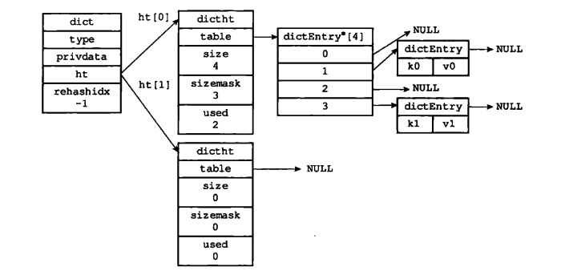
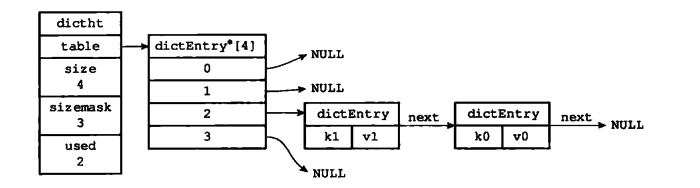
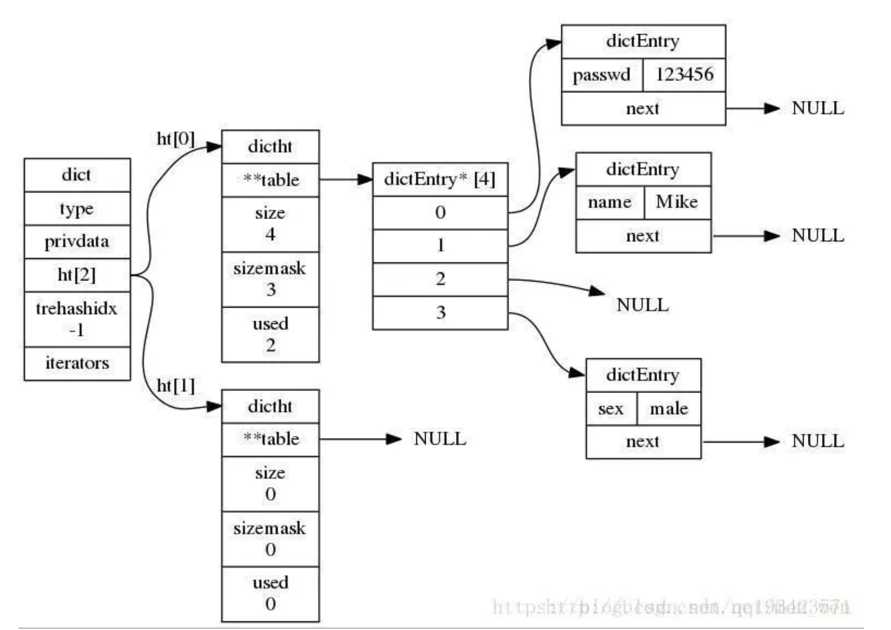
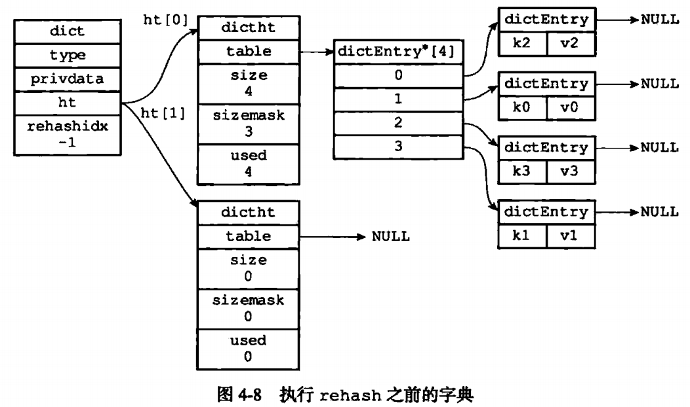
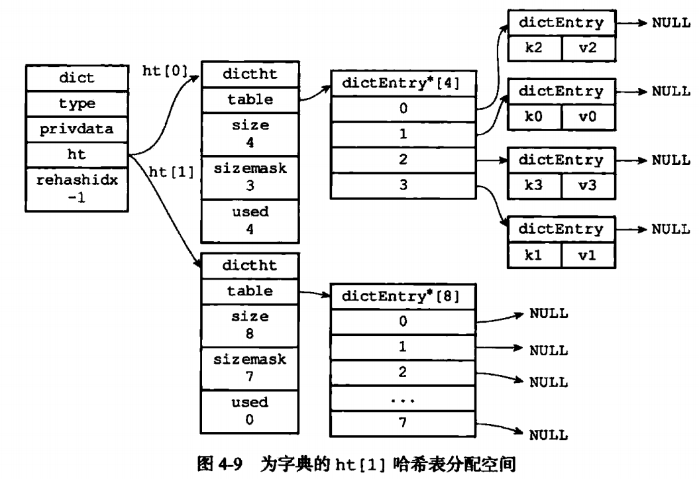
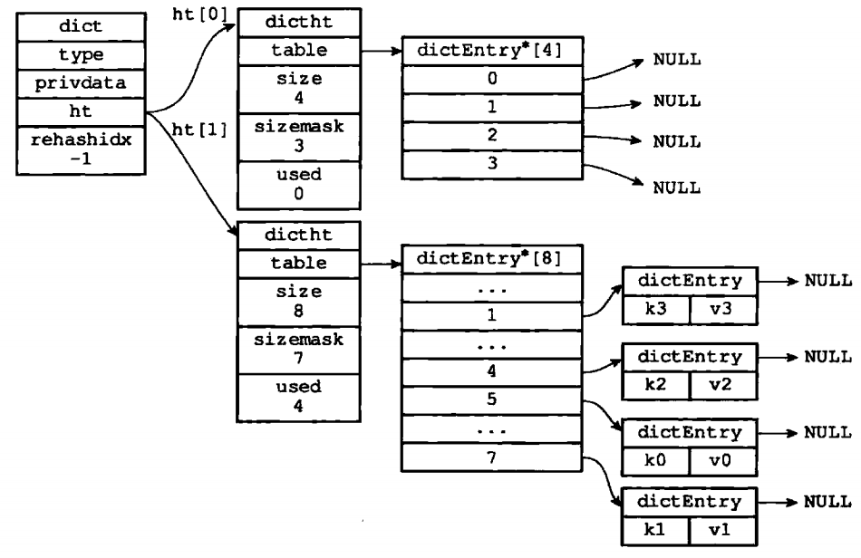
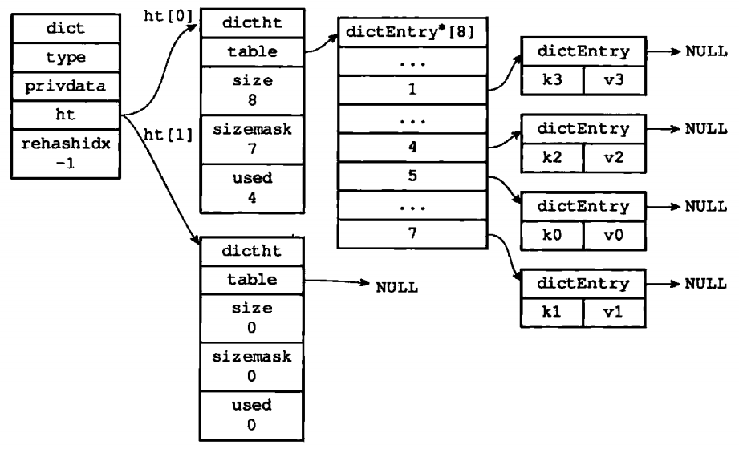

字典，又称为符号表(symbol table)、关联数组(associative array)或映射(map)，是一种用于保存键值对的抽象数据结构，它经常作为一种数据结构内置在很多高级编程语言里面。
一、概念
字典，又称为符号表(symbol table)、关联数组(associative array)或映射(map)，是一种用于保存键值对的抽象数据结构，它经常作为一种数据结构内置在很多高级编程语言里面。
- 然而由于redis所使用的C语言并没有内置这种数据结构，因此Redis构建了自己的字典实现。
- Redis的字典底层实现是通过哈希表，一个哈希表里面可以有多个哈希表节点，而每个哈希表节点就保存了一个字典中的一个键值对。
- dictEntry(哈希表结点)，dictType(字典类型函数)，dictht(哈希表)和dict(字典)四个结构体来实现Redis字典结构
字典结构
1 | //字典结构定义在dict.h/dict |
- type是一个指向
dict.h/dictType结构的指针，保存了一系列用于操作特定类型键值对的函数 - privdata保存了需要传给上述特定函数的可选参数；
- ht是两个哈希表，一般情况下，只使用
ht[0]，只有当哈希表的键值对数量超过负载(元素过多)时，才会将键值对迁移到ht[1]，这一步迁移被称为rehash，即重哈希 - rehashidx由于哈希表键值对有可能很多很多，所以
rehash不是瞬间完成的，需要按部就班，那么rehashidx就记录了当前 rehash 的进度，当rehash完毕后，将rehashidx置为-1；

- 字典应用
Redis的数据库就是使用字典作为底层实现的，通过key和value的键值对形式代表了数据库中全部数据
Redis中所有对数据库的增、删、查、改的命令都是建立在对字典的操作上
Redis中带过期时间的key的集合也是字典
Redis中哈希键的底层实现也是字典，当一个哈希键包含的键值对比较多或键值对中的元素都是比较长的字符串时，Redis就会使用字典作为哈希键的底层实现。
哈希表(Hash table，也叫散列表)，是根据关键码值(key value)而直接进行访问的数据结构，它通过把关键码值映射到表中一个位置来访问记录，以加快查找的速度。这个映射函数叫做散列函数，存放记录的数组叫做哈希表。
- 哈希表结构
1 | typedef struct dictht { |
- table：一个数组，数组中的每个元素都是一个指向dictEntry结构的指针，每个dictEntry结果保存着一个键值对
- size：哈希表的大小，也即是table数组的大小
- used：表示哈希表中已经存储的键值对的个数
- sizemask：大小永远为
size-1，该属性用于计算哈希值，它和哈希值一起决定了一个键应该被放到table数组的哪个索引上面

- 哈希表节点：用dictEntry结构表示，每个dictEntry结构都保存着一个键值对。
1 | //哈希表的table指向的数组存放这dictEntry类型的地址。定义在dict.h/dictEntryt中 |
- 除字典、哈希表、哈希表节点三种数据结构外，还有另外一种结构体dictType：保存着操作字典不同类型key和value的方法的指针
1 | typedef struct dictType { |

二、扩展
哈希函数
- 哈希函数是一种映射关系，根据数据的关键词key，通过一定的函数关系计算出该元素存储位置的函数，表示为：address = Hash(key)。
- 常见哈希函数构造方法
- 直接定址法
- 除留余数法(取模)
- 数字分析法
- 平方取中法
- 折叠法(叠加法)
- 随机数法
- redis使用的哈希函数
- Thomas Wang’s 32 bit Mix函数，对一个整数进行哈希，该方法在dictIntHashFunction中实现
- 使用MurmurHash2哈希算法对字符串进行哈希，该方法在dictGenHashFunction中实现
- 使用基于djb哈希的一种简单的哈希算法，该方法在dictGenCaseHashFunction中实现
哈希冲突
- 选用哈希函数计算哈希值时，不同的key会得到相同的结果，这就是哈希冲突。
- 解决冲突
- 开放寻址法
- 再散列法
- 链地址法(拉链法)
- 建立公共溢出区
rehash：随着字典操作的不断执行，哈希表保存的键值对会不断增多(或者减少)，为了让哈希表的负载因子维持在一个合理的范围之内，当哈希表保存的键值对数量太多或者太少时，需要对哈希表大小进行扩展或者收缩，这就是rehash。
- 负载因子：当前已使用结点数量除上哈希表的大小，具体到redis字典即
load_factor = ht[0].used / ht[0].size - 哈希表扩展：发生在元素的个数等于哈希表数组的长度时，进行2倍的扩容；
- 为
ht[1]分配空间，大小为第一个大于等于ht[0].used*2的2的幂【这块儿待查看redis源码确定，有的说进行2倍的扩容】 - 将保存在
ht[0]上的键值对rehash到ht[1]上，rehash就是重新计算哈希值和索引并且重新插入到ht[1]中，插入一个删除一个 - 当
ht[0]包含的所有键值对全部rehash到ht[1]上后，释放ht[0]的空间，将ht[1]设置为ht[0]，并且在ht[1]上新创件一个空的哈希表为下一次 rehash 做准备
- 为
- 负载因子：当前已使用结点数量除上哈希表的大小，具体到redis字典即
哈希表扩展demo
执行rehash前

ht[0].used当前的值为4，4*2=8=(2^3)恰好是第一个大于等于4*2的2的n次方，所以程序会将ht[1]哈希表的大小设置为8。下图展示了ht[1]分配空间之后字典的样子
将ht[0]包含的四个键值对都rehash到ht[1]如下图
释放ht[0]，将ht[1]设置为ht[0]，然后为ht[1]分配一个空白哈希表，至此哈希表的扩展操作执行完毕，见下图
哈希表收缩：发生在当元素个数为数组长度的10%时
- 哈希表的收缩，同样是为
ht[1]分配空间，大小等于max(ht[0].used, DICT_HT_INITIAL_SIZE)，然后和扩展做同样的处理即可。
- 哈希表的收缩，同样是为
哈希表扩展和收缩时机
- 当一下条件的任意一个被满足时，程序会自动开始对哈希表执行扩展操作：
- 服务器目前未在执行BGSAVE命令或者BGREWRITEAOF命令，并且哈希表的负载因子大于等于1。
- 服务器目前正在执行BGSAVE命令或者BGREWRITEAOF命令，并且哈希表的负载因子大于等于5。
- 当哈希表的负载因子小于0.1时，程序自动开始对哈希表执行收缩操作。
- 当一下条件的任意一个被满足时，程序会自动开始对哈希表执行扩展操作：
收缩或者扩展哈希表需要将
ht[0]表中的所有键全部rehash到ht[1]中，但是rehash操作不是一次性、集中式完成的(当键值对数量非常多的时候，大量的计算很可能导致服务器宕机)，而是分多次、渐进式、断续进行的，这样才不会对服务器性能造成影响。
渐进式rehash
关键
- 字典结构dict中的一个成员rehashidx，当rehashidx为-1时表示不进行rehash，当rehashidx值为0时表示开始进行rehash
- 在rehash期间，每次对字典的添加、删除、查找、更新操作时都会判断是否正在进行rehash操作，如果是则顺带进行单步rehash，并将rehashidx+1
- 当rehash时进行完成时，将rehashidx置为-1，表示完成rehash
实现
- 为
ht[1]分配空间，让字典同时持有ht[0]和ht[1]两个哈希表 - 在字典中维持一个索引计数器变量rehashidx，并将它的值设置为0，表示rehash工作正式开始
- 在rehash进行期间，每次对字典执行添加、删除、查找、更新时，程序除了执行指定的操作以外，还顺带将
ht[0]哈希表在rehashidx索引上的所有键值对rehash到ht[1]，当rehash工作完成之后，程序将将rehashidx属性的值+1 - 随着字典操作的不断执行，最终在某个时间点上
ht[0]的所有键值对都会被都会被rerhash至ht[1]，这时程序程序将rehashidx属性的值设为-1，表示rehash操作已完成
- 为
注意
- 在进行渐进式rehash的过程中字典会同时使用
ht[0]和ht[1]两个哈希表，所以在渐进式rehash进行期间，字典的删除、查找、更新等操作会在两个哈希表上进行。如要在字典里面查找一个键key，程序会现在ht[0]里面进行查找，如果没找到就会继续到ht[1]里面进行查找。 - 在渐进式rehash执行期间，新增加到字典的键值对一律会被保存到
ht[1]里面而ht[0]则不再进行任何添加操作，这一措施保证了ht[0]包含的键值对数量只会减少不会增加，并随着rehash 操作的执行而最终变成空表。
- 在进行渐进式rehash的过程中字典会同时使用